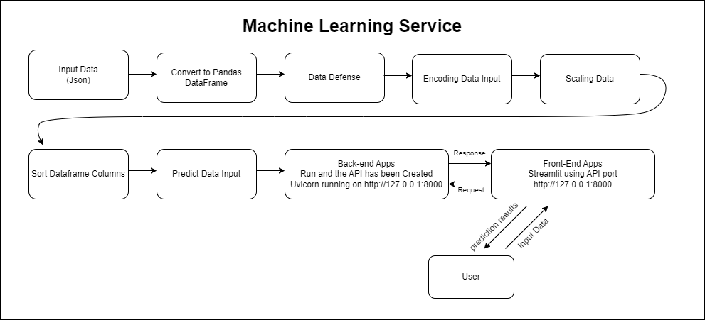

Churn Prediction for Bank Customers Using Machine Learning
Business Problem
Churn Prediction for Bank Customers Using Machine Learning merupakan tindakan bagaimana mengidentifikasi pelanggan bank yang cenderung beralih ke bank lain sehingga bank dapat mengambil tindakan yang tepat untuk mempertahankan pelanggan. Dengan menggunakan Machine Learning, bank dapat mengambil pendekatan yang lebih proaktif dan mengurangi biaya akuisisi pelanggan baru dengan mempertahankan pelanggan yang sudah ada. Oleh karena itu, pengembangan model prediksi churn yang akurat dan andal mampu membantu bank dalam mengurangi churn rate dan meningkatkan retensi pelanggan.
Business Objective
Objektif bisnis dari Churn Prediction for Bank Customers Using Machine Learning adalah untuk membantu bank mengidentifikasi pelanggan yang berpotensi meninggalkan layanan dan mengembangkan strategi retensi yang efektif, sehingga dapat mempertahankan pelanggan dan meningkatkan loyalitas pelanggan secara keseluruhan. Dengan memprediksi kemungkinan churn, bank dapat mengambil tindakan yang diperlukan untuk mempertahankan pelanggan yang bernilai dan meningkatkan kepuasan pelanggan.
Business Metrics
Churn Rate : mereduksi persentase jumlah pelanggan yang berhenti berlangganan layanan bank dalam periode tertentu.
Machine Learning Solution
Machine Learning Solution Churn Prediction for Bank Customers Using Machine Learning adalah mengembangkan model prediksi churn menggunakan algoritma machine learning XGBoost, dengan melakukan preprocessing data dan feature engineering terlebih dahulu, kemudian melakukan tuning hyperparameter untuk mendapatkan model yang terbaik. Setelah itu, model tersebut dapat digunakan untuk memprediksi kemungkinan churn pada nasabah bank atau memprediksi kelas 0 untuk stay dan kelas 1 untuk churn, sehingga bank dapat mengambil tindakan pencegahan yang tepat untuk mempertahankan nasabah dan meningkatkan retention rate. Selain itu, monitoring kinerja model dan perbaikan terus-menerus juga perlu dilakukan untuk memastikan model tetap akurat dan relevan dengan kondisi pasar yang selalu berubah.
Machine Learning Metrics
Churn Prediction for Bank Customers merupakan perangkat analisa data untuk mengetahui nasabah yang churn berdasarkan profile nasabah bank yang telah tersedia.
Kumpulan data ini berisi rincian nasabah bank dan variabel target adalah variabel biner (stay and churn) yang mencerminkan fakta apakah nasabah meninggalkan bank (menutup rekeningnya) atau tetap menjadi nasabah suatu bank. variabel fitur akan diproses guna memprediksi apakah nasabah akan menutup rekening atau tidak
User menginginkan metrics bisnis berupa recall yakni lebih mengutamakan memprediksi churn namun sebenarnya tidak churn daripada memprediksi nasabah tidak churn sebenarnya nasabah tersebut churn, hal ini menunjukkan bahwa metode yang digunakan akan memperkecil nilai True Negative (TN) dan False Negative (FN), dan menaikkan TP (TP) dan False Positive (FP).
Namun pada eksplorasi kali ini Churn Prediction for Bank Customers akan menampilkan beberapa metrics sebagai berikut:
- Accuracy: metrik yang paling umum digunakan untuk mengukur seberapa akurat model dalam memprediksi kelas target. Accuracy dihitung sebagai rasio antara jumlah prediksi benar dengan jumlah total prediksi.
- Precision: metrik yang mengukur seberapa banyak dari kelas yang diprediksi sebagai positif yang benar-benar positif. Precision dihitung sebagai rasio antara jumlah True Positives dengan jumlah True Positives dan False Positives.
- Recall: metrik yang mengukur seberapa banyak dari kelas positif yang benar-benar terdeteksi oleh model. Recall dihitung sebagai rasio antara jumlah True Positives dengan jumlah True Positives dan False Negatives.
- F1 Score: merupakan harmonic mean dari Precision dan Recall. F1 score memberikan kesimbangan antara Precision dan Recall dan digunakan untuk membandingkan kinerja model dengan metrik gabungan.
- ROC-AUC: Kurva Karakteristik Operasi Penerima (ROC) dan area di bawah kurva (AUC) digunakan untuk mengevaluasi kinerja model dengan menghitung rasio True Positive Rate (TPR) dan False Positive Rate (FPR). ROC-AUC memberikan nilai keseluruhan kinerja model dan digunakan untuk membandingkan beberapa model yang berbeda.
Literature Review
- emalata Jain mengusulkan dua teknik machine learning untuk memprediksi churn pelanggan seperti Logistic Regression dan Logit Boost. instance memiliki 20 atribut. Percobaan mengungkapkan bahwa tidak banyak perbedaan hasil dari kedua teknik tersebut. Logistic Regression memiliki akurasi sebesar 85,2384%, sedangkan Logit Boost memiliki akurasi 85,1785%. (Helmata jain, 2020)
- Nurul Izzati Mohammad mengusulkan untuk mengidentifikasi faktor-faktor yang mempengaruhi churn pelanggan dan mengembangkan model prediksi churn yang efektif serta memberikan analisis terbaik dari hasil visualisasi data. Kumpulan data dari kaggle terbuka situs data. Ada tiga pengklasifikasi pembelajaran mesin seperti Logistic Regression , ANN dan Random Forest digunakan. Hasil percobaan dengan tinggi akurasi 85%. Pengklasifikasi Logistic Regression menunjukkan hasil terbaik (Muhammad, Nurul & Ismail, S.A. & Kama, Mohd & Mohd Yusop, Othman & Azmi, Azri, 2019)
- Praveen Lalwani et al mengusulkan proses prediksi menggunakan yang paling populer memprediksi model yaitu, Logistic Regression, Naïve Bayes, Support Vector Machine, Random Forest, Decision Tree, dll. di set kereta dan juga di boosting. Hasil percobaan menunjukkan bahwa pengklasifikasi AdaBoost dan XGBoost memberikan akurasi maksimal 81,71% dan 80,80%.
Alur Transformasi Data
Data Preparation
Gambar Arsitektur Data Preparation

Dataset Definition
Data yang digunakan merupakan data yang menggambarkan profile nasabah yang menutup rekening dan nasabah yang tetap. adapun fitur profile nasabah yang digunakan antara lain. Data disadur dari laman
https://www.kaggle.com/datasets/shantanudhakadd/bank-customer-churn-prediction
Data berisi 10000 baris dan 11 kolom yaitu :
CreditScore : [int64] [350 - 850] Skor Kredit yang diukur oleh pihak bank sebagai penilaian terhadap nasabah untuk menggambarkan risiko kredit seorang calon debitur
Geography : [object] ['France', 'Spain', 'Germany'] Negara asal nasabah
Gender : [object] ['male','female'] Jenis Kelamin nasabah
Age : [int64] [18 - 92] Jenis Kelamin nasabah
Tenure : [int64] [0 - 10] Jumlah tahun kepesertaan nasabah
Balance : [float64] [0.0 - 250898.09] Saldo bank nasabah
NumOfProducts : [int64] [1, 3, 2, 4] Jumlah produk bank yang digunakan nasabah
HasCrCard : [int64] [0 - 1] apakah nasabah memegang kartu kredit dengan bank atau tidak.
IsActiveMember : [int64] [0 - 1] apakah nasabah adalah anggota aktif di bank atau tidak.
EstimatedSalary : [float64] [11.58 - 199992.48] Perkiraan gaji nasabah dalam Dolar
Exited : [int64] [0,1] 1 jika nasabah menutup rekening dengan bank dan 0 jika nasabah dipertahankan.
Exploratory Data Analysis (EDA)
Gambar Arsitektur Exploratory Data Analysis (EDA)

Check Skewed Data
Gambar Check Skewed Data

Rules :
- jika kolom mendapati skewnya sebesar > +- 0.5, maka dari itu kolom tersebut akan diimputasi dengan median
- jika kolom mendapati skewnya sebesar <= +- 0.5 kolom lainnya akan diimputasi dengan mean
Imputasi Median :
- Age
Imputasi Mean :
- CreditScore
- Balance
- EstimatedSalary
Imputasi untuk data kategorikal ialah menggunakan modus Imputasi untuk data numerikal ialah median dan mean tergantung skewed yang sudah dijelaskan diatas karena masing-masing memiliki kelas 0 dan 1 tidak terpaut jauh dan tidak menggunakan kelas.
Distribusi Data
Visualisasi menggunakan kdeplot diatas menghasilkan bentuk distribusi data masing-masing kolom dengan garis merah sebagai garis mean dari kolom data dan warna hijau sebagai garis median dari kolom data.
Gambar Distribusi Data

-
CreditScore memiliki data dalam bentuk normal distribution
-
Age memiliki data dalam bentuk right skewed distribution
-
EstimatedSalary memilikii data dalam bentuk uniform distribution
-
Balance memiliki data dalam bentuk bimodal distribution
Check Proporsi Data
Gambar Proporsi Data
Berdasarkan persentase label stay dan exited menyatakan ketidakseimbangan label, untuk user yang stay memiliki porsi 79.5% sedangkan user Exited memiliki porsi 20.5%
Check Korelasi Data
Gambar Check Korelasi Data
Jika dilihat dari hasil cek korelasi diatas antar variabel tidak memiliki korelasi yang positif kuat, dan yang memiliki korelasi positif tertinggi hanya memiliki poin 0.28 yakni antara Age dan Exited
Outlier Detection
Gambar Outlier Detection

Memang pada hasil ploting diatas memiliki titik titik outlier yang cukup banyak yang berada pada kolom CreditScore dan Age, namun setelah melakukan validasi ulang, user menyatakan bahwa data tersebut normal terjadi.
Kesimpulan Explolatory Data Analysis
-
Data yang tidak diperuntukan untuk pemodelan dan eda akan langsung di drop pada data preparation yakni kolom "RowNumber","CustomerId","Surname".
-
Skewed pada data numerical menyatakan bahwa untuk kolom Age akan dilakukan imputasi dengan metode median dan untuk kolom CreditScore, Balance, EstimatedSalary menggunakan metode mean dan data kategorikal diputuskan untuk menggunakan modus untuk metode imputasinya dan tidak menggunakan kelas
-
Distribusi Data kategorikal, CreditScore memiliki data dalam bentuk normal distribution, Age memiliki data dalam bentuk right skewed distribution, EstimatedSalary memilikii data dalam bentuk uniform distribution, Balance memiliki data dalam bentuk bimodal distribution.
-
Data Imbalance, maka perlu dilakukan balancing data untuk menyeimbangkan label target.
-
Outlier Detection, memang terdapat titik yang menggambarkan oulier, namun data tersebut dirasa normal terjadi.
Data Preprocessing
Gambar Data Preprocessing *
Setelah mendapatkan mandat dari hasil eksplorasi data diatas maka dilakukan implementasi pada data preprocessing antara lain
-
Handling Missing Value dengan kolom Age akan dilakukan imputasi dengan metode median dan untuk kolom CreditScore, Balance, EstimatedSalary menggunakan metode mean dan data kategorikal diputuskan untuk menggunakan modus untuk metode imputasinya dan tidak menggunakan kelas
-
Get Dummies pada Kolom Geography dan Gender
Gambar Get Dummies
Setelah melakukan get dummies pada data terlihat kolom Gender dan Geography sudah berubah bentuk menjadi get_dummies
-
Balancing Data dengan menggunakan metode SMOTE Gambar Balancing Data
 Setelah melakukan balancing data terlihat bahwa label pada kolom Exited menjadi seimbang yakni dengan proporsi 50% untuk kelas 0 dan 50% untuk kelas 1
Setelah melakukan balancing data terlihat bahwa label pada kolom Exited menjadi seimbang yakni dengan proporsi 50% untuk kelas 0 dan 50% untuk kelas 1 -
Dan melakukan scaling data pada kolom "CreditScore", "Age", "Tenure", "EstimatedSalary", "Balance" Gambar Data Scaling Dapat dilihat bahwa data sudah dilakukan scaling dengan menggunakan standarscaler
-
Sorted Column untuk melakukan defense urutan column Gambar Sorted Columns

-
Data Clean, siap untuk dilanjutkan pada tahap pemodelan
Data Modeling
Gambar Arsitektur Data Modeling

-
Setelah melakukan Data Preprocessing, hasilnya akan dilakukan pemodelan agar bisa memprediksi nasabah stay atau exited
-
Pemodelan Binary Classification akan menggunakan metode Xgboost
XGBoost (Extreme Gradient Boosting) merupakan salah satu algoritma machine learning yang cukup populer untuk melakukan prediksi pada tugas-tugas seperti binary classification, regression, dan ranking. Algoritma XGBoost adalah implementasi dari teknik Gradient Boosting Decision Trees (GBDT) yang merupakan ensemble learning method, yaitu gabungan dari beberapa model kecil untuk membentuk satu model besar yang lebih akurat.
Secara umum, algoritma XGBoost pada binary classification bekerja dengan cara membangun beberapa decision tree secara sekuensial, dimana setiap tree akan memperbaiki hasil prediksi dari tree sebelumnya. Untuk mengukur perbedaan antara hasil prediksi aktual dan hasil prediksi dari model, XGBoost menggunakan loss function yang digunakan dalam model GBDT, yaitu berupa penjumlahan dari squared error loss function dan regulerisasi L1 dan L2 pada tiap tree.
Rumus matematis untuk training objective pada binary classification dengan XGBoost adalah:
Selama proses training, XGBoost akan melakukan optimasi terhadap objective function menggunakan teknik gradient descent. Setiap tree yang ditambahkan pada model, akan membantu memperbaiki prediksi dari tree sebelumnya dengan menambahkan residual error dari iterasi sebelumnya pada setiap label target. Pada akhir iterasi, XGBoost akan menghasilkan prediksi final berupa probabilitas untuk masing-masing label pada data testing.
Best Parameter dan Evaluation Metrics
Hasil pemodelan dengan menggunakan tunning parameter Xgboost ialah sebagai berikut dan skor accuracy yang dihasilkan pada data valid dan test dirasa cukup baik.
Best hyperparameters: {'learning_rate': 0.1, 'max_depth': 7, 'n_estimators': 200, 'subsample': 0.7} Validation accuracy: 0.8613333333333333 Test accuracy: 0.8686666666666667
dan berikut hasil dari classification report dari pemodelan diatas
Berdasarkan hasil Classification report diatas Recall pada classification report merupakan salah satu metrik evaluasi klasifikasi yang mengukur seberapa baik model dalam mengidentifikasi kelas positif atau kelas minoritas. Pada laporan di atas, recall untuk kelas 0 adalah 0.94 dan recall untuk kelas 1 adalah 0.60. Ini berarti model memiliki kinerja yang lebih baik dalam mengidentifikasi kelas mayoritas (0) daripada kelas minoritas (1). Dalam konteks bisnis, ini dapat berarti bahwa model kurang sensitif dalam mengidentifikasi kasus kelas minoritas, sehingga dapat mengabaikan pelanggan yang berpotensi keluar dari bisnis. Oleh karena itu, dalam kasus ini, perlu diperhatikan meningkatkan recall untuk kelas minoritas agar model dapat mengidentifikasi pelanggan yang berpotensi keluar lebih baik.
dan berikut hasil ROC dan AUC model XGboost yang digunakan untuk pemodelan kali ini
AUC (Area Under the Curve) adalah metrik evaluasi yang digunakan untuk mengukur kinerja model klasifikasi biner. Nilai AUC menunjukkan seberapa baik model dapat membedakan antara kelas positif dan negatif.
AUC memiliki rentang nilai antara 0 hingga 1, dimana semakin tinggi nilai AUC, semakin baik kinerja model dalam membedakan antara kelas positif dan negatif. Dalam kasus ini, nilai AUC sebesar 0.8643 menunjukkan bahwa model memiliki kinerja yang baik dalam membedakan antara kelas positif dan negatif.
Machine Learning Services
Arsitektur Machine Learning Services 
Selanjutnya, setelah melalui beberapa proses dan model telah di save akan dilanjutkan pada deployment dengan menggunakan API dan Streamlit gambar dibawah ini merupakan contoh mengakses menggunakan ML Services melalui FAST API Swagger UI
Berikut contoh input data yang digunakan untuk mengakses API

Berikut hasil output prediksi dari API services

Agar lebih ramah dalam menggunakannya dan tampilannya lebih powerfull, user disuguhkan dengan apps sederhana yang dibangun dengan menggunakan streamlit services, berikut contoh penggunaannya
User diharapkan mengisi form yang sudah disediakan hingga selesai, jika terdapat kesalahan range dalam input data streamlit akan menampilkan error dibagian mana yang inputnya salah, jika dirasa sudah sesuai kriteria maka klik tombol predict dan akan mengelarkan hasil Prediction Result: Class 0 = Customer stay dan Class 1 = Customer churn
Kesimpulan
- Model machine learning dengan menggunakan Xgboost sudah cukup memberikan hasil yang cukup baik dalam pemodelan dibuktikan dengan nilai Validation accuracy: 0.8613333333333333 Test accuracy: 0.8686666666666667 dan recall untuk kelas 0 adalah 0.94 dan recall untuk kelas 1 adalah 0.60. Ini berarti model memiliki kinerja yang lebih baik dalam mengidentifikasi kelas mayoritas (0) daripada kelas minoritas (1) dan Dalam kasus ini, nilai AUC sebesar 0.8643 menunjukkan bahwa model memiliki kinerja yang baik dalam membedakan antara kelas positif dan negatif hal ini sesuai dengan machine learning metrics yang sudah didefinisikan
- For Future Works, lebih banyak variabel yang dilakukan pemodelan untuk memodelkan seseorang yang churn dan stay, dan lebih banyak percobaan atau riset terkait cara meningkatkan nilai recall yang jauh lebih tinggi
Referensi
- Mahalekshmi, A., & Chellam, G. H. (2022). Analysis of customer churn prediction using machine learning and deep learning algorithms. International Journal of Health Sciences, 6(S1), 11684²11693. Jain H, (2021) Machine Learning Models Developed For Telecom Churn Prediction J Comput Eng Inf Technol 10:2 DOI: 10.37532/jceit.2021.10(2).251.
- Muhammad, Nurul & Ismail, S.A. & Kama, Mohd & Mohd Yusop, Othman & Azmi, Azri. (2019). Customer Churn Prediction In Telecommunication Industry Using Machine Learning Classifiers. 1-7. 10.1145/3387168.3387219.
-
Lalwani, P., Mishra, M.K., Chadha, J.S. et al. Customer churn prediction system: a machine learning approach. Computing 104, 271–294 (2022). https://doi.org/10.1007/s00607-021-00908-y
-
Materi Pacmann
- https://towardsdatascience.com/step-by-step-approach-to-build-your-machine-learning-api-using-fast-api-21bd32f2bbdb
- https://engineering.rappi.com/using-fastapi-to-deploy-machine-learning-models-cd5ed7219ea
- https://towardsdatascience.com/xgboost-theory-and-practice-fb8912930ad6